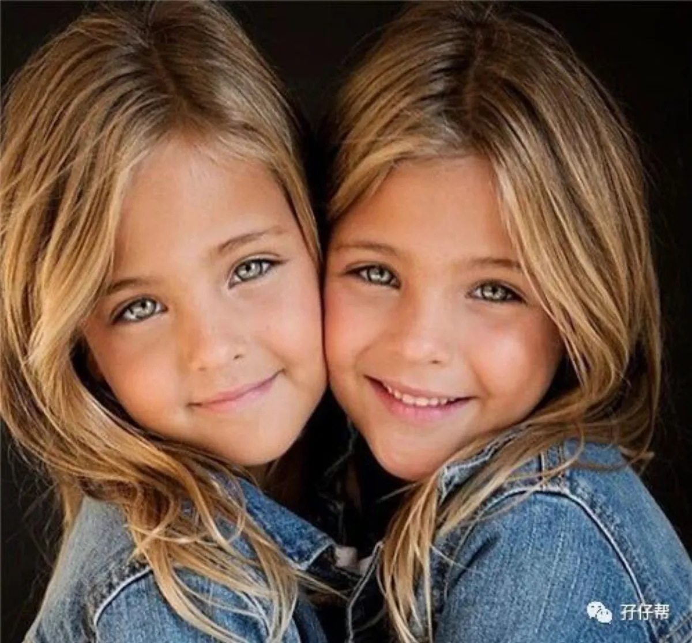
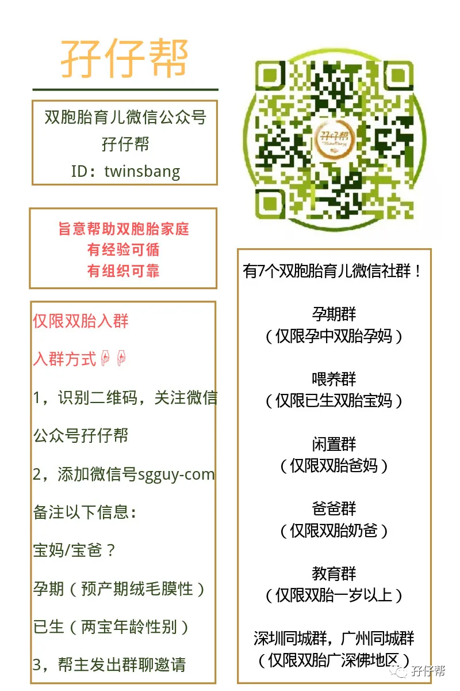

文|圆圈妈，一个文思如尿崩的双胎妈妈
图|来自网络，如有侵权，请联系删除
· 正 · 文 · 来 · 啦 ·
这篇文章写给家有同卵双胞胎的家庭，异卵双胞胎可以把此文章忽略不计。
因为用！不！上！
还有...
此文略显低智商，那些IQ和EQ自认达到上神级别的亲，也不必戳进来看，免得亮！瞎！眼！
此文推送出来的目的只有一个：教双胞胎父母如何帮助老师快速区分双胞胎孩子。
如果你准备把双胞胎送去早教机构或者幼儿园，而你又恰好有解不开的情结，不得不把双胞胎孩子放在同一班，穿一模一样的衣服，那你要赶紧做一件事...
那就是，甭管什么绝招，妙招，狠招，怪招...统统都给我上。
目的就是帮助老师在最短时间内，抓住要领，准确分辨出你家的双胞胎孩子。
你是双胞胎的老母亲，自然可以从他们的一个眼神中轻轻松松地分辨出谁是谁。
可对于刚刚接触他们的老师同学们来说，在穿着一模一样的情况下，真的会….
一！脸！懵！逼！
圆圈上了一个学期的小班，依然有老师同学们分不清谁是圆圆谁是圈圈。
最让我汗颜的是家访，老师做学期汇报工作时如是说…
“不知道是圆圆还是圈圈，总是喜欢去玩水!”
“不知道是圆圆还是圈圈，吃饭总是抿着嘴!”
“不知道是圆圆还是圈圈，老是上课走神！”
“……”好吧，讲了等于没讲。
33个孩子，只有3个老师管着，还要面对两个一模一样的熊孩子，还真的挺难为她们的。
我实在没有抱怨的理由，只怪自己没有意识到双胞胎孩子教育的特殊性原来真的需要特殊对待。
因此，学龄前的双胞胎的教育，非常关键一点是，帮助老师早日区分双胞胎孩子。
以下6个办法仅供参考，也许对你有点帮助。
①用颜色给双胞胎下定义
如果非要穿同款衣服，那也没关系，请尽量穿不同颜色，最好用颜色分类规定好，并每天都这样固定，尽量不要变动。
比如蓝色是哥哥，黄色是弟弟，粉色是妹妹，红色是姐姐，在每天接送时都告诉老师今天的区分暗号。
长此以往形成规律，老师和小伙伴们就能用不同颜色衣服去区分了。
②来点不一样的发型
有些幼儿园规定必须统一校服和鞋子，那就给他们修剪一个不一样的发型吧！
如果是同卵双胞胎女孩，姐姐扎马尾，妹妹梳小辫子。
如果是同卵双胞胎男孩，那比较难办，不管板寸，碎发，分头，都不大容易区分，但你可以DIY，后脑勺或者头顶刻一个“大”或“小”。
这有点滑稽，但不失一个好诀窍，而且走在路上肯定回头率百分百。
③穿不一样的鞋袜
如果学校对衣着搭配没有严格要求，你还可以在鞋子上做文章。
比如给哥哥穿运动鞋，弟弟穿皮鞋，姐姐穿长筒袜子，妹妹穿低帮的船袜。
这是最容易区分的办法了，但前提是他们不会因为“不同”而撕逼。
有一次，我赶时间找不到另外一双鞋，只好给他们一人穿凉鞋和一人穿洞洞鞋，结果他们回来的时候，两人都是一只脚穿凉鞋，另一只脚穿洞洞鞋。
老师说他们午睡醒后为了穿洞洞鞋打起来了，于是只好一人一只。
OK ，看吧！这就是为什么他们必须穿一模一样的原因。
④给衣物用品贴上名字
基本上每个小朋友都有姓名贴，便于老师区分各自的书包，衣物，用品等，但是双胞胎的姓名贴则要格外不一样了。
你得处理得分外明显，试下让老大的姓名贴用印章刻上去，老二的则用针线绣上去…
我不会针线活，而且两人的汗巾袜子加起来得有二三十件，要一针一线地绣上去，我宁愿原地爆炸…
于是，只好买了同款的姓名印章，不同油墨，一个黑色，一个蓝色。
结果就是，因为太不显眼了，他们的书包经常找错主人，生活用品从来都是凌乱的。
⑤挖掘不同点
即使是同卵的双胞胎，若仔细看或相处久了，依然能发现很多不同之处，比如性格，喜好，体型等。
生活老师说看见在大口吃肉的一定是圆圆，只挑青菜吃的圈圈，班主任说老是坐不住走来走去的一定是圆圆，坐着不动的是圈圈。
入园前提前跟班主任说一些双胞胎的不同点，让老师们心中有数，尽早熟悉两孩子的特殊情况，方便管理教学。
如果双胞胎有各自的胎记或者不同的特别之处就再好不过了，比如...
一个直发，一个卷发，
一个脸圆一点，一个脸尖一些，
一个胖一点，一个瘦一点，
头发一个多，一个少，
一个发旋偏左，一个发旋居中，
我跟老师说，如果实在认不出他们哥俩，那就脱裤子吧，因为圈圈的大腿内侧有青一块的胎记，圆圆没有。
⑥让双胞胎自己表明ID
有些双胞胎会很厌烦被别人无休止地问“谁是老大谁是老二”这种无意义的问题，圆圈就是这样。
我发现圈圈已经明显表现出不耐烦的情绪了，每当他们的舅舅喊错他的名字时，他就生气地跺脚：“舅舅，你又搞错了，我不是圆圆，我是圈圈。”
我没有刻意地教他们，但是圆圈好像训练有素似的，只要有人叫错他们各自的名字，他们就会赶紧纠正过来。
也许他们实在太累了，总是被叫错名字，经常被大人反复地问：“你是圆圆还是圈圈？”
于是他们希望通过不断地指出对方的错误，让别人尽快分辨出来。
哎，双胞胎与生俱来的烦恼！
以上办法仅适合两孩子刚入托或入园时的雕虫小技。
毕竟时间久了，双胞胎孩子的不同点很快就会原形毕露，再眼盲的人也能分得出来。
入托或入园是两孩子第一次进入集体生活。
面对新环境，自然会有不适应和抵触心理，尤其是他们身份特殊，容易招来很多异样的眼光，这样会让他们格外不安。
因此，帮助老师同学们早日区分他们，认识他们，发现他们各自的不同点，不是多此一举，而是很！有！必！要！
当他们感觉到被正常对待了，才会更快适应集体生活，与小伙伴们打成一片。
这，难道不正是你想要的吗？
#你有哪些鬼点子区分双胞胎孩子#
欢迎留言区分享出来哈！
-END-
重磅互动
#你希望写什么育儿经验干货？#
评论区聊一聊
随便提，万一下篇就写了呢？
关于这个号
谢谢关注！
我是圆圈妈
85后，全职妈妈
家有孖仔两枚，圆圈&圈圈
双胞胎育儿公众号：孖仔帮
ID:twinsbang
旨意分享双胞胎育儿经验帮助双胞胎家庭
有经验可循
有组织可靠
希望我的经验对您有所启发
期待与您一起共享双胞胎育儿经

